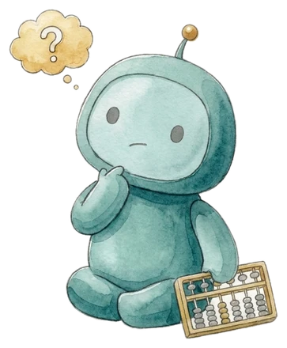

夕飯の相談も
断りのLINEも
AIに5分で頼める
7日間

AIとは、話しかけると答えてくれるアプリ（Claude＝クロード、ChatGPTなど）のことです。受け取りはLINEだけ（メールや電話番号は要りません）。AIの利用登録（無料）は1日目に、画面の見本つきで一緒にやります。食費のレシートも、写真で整理できるようになります。
お金の相談を2,000件受けてきた森川が、暮らしの言葉で案内します（2026年10月時点・社内集計）。この7日間の中で売り込みはしません。投資や商品の勧誘もありません。
LINEで1日目（1分）を見る- 押すと、入力済みの文面が出ます。そのまま「送信」
- 1日目の動画（1分）がすぐ届きます
- 費用は0円。あとから請求はありません。止めたいときは、LINEのトーク画面から1タップ（ブロック）で止まります
まず1分、ためしてみる
登録しなくても大丈夫。いちばん近いものを1つ選んでください。
7日間で、できるようになること
1日1つ。できたらカードを押して、スタンプをためてください。
スタンプはこのスマホの中だけに残ります。所要時間や結果は、使い方や状況によって変わります。
小さく変わること
森川から

僕の会社では、Instagramのリールを週4本、AIが作って投稿しています。でも最初からそうだったわけではなくて、声までAIにしたら「元気がない」と自分でダメを出して、録音は自分に戻しました。
任せるところと、自分が持つところを分けたら、続けられるようになりました。この7日間は、その「分け方」をいちばん小さな形で体験してもらうものです。
森川満章｜fulfull株式会社 代表（横浜）。お金の相談2,000件・講演3,000人。
登録した直後に1日目、翌日から毎朝7時に1本ずつ届きます。先に中身を見たい方は 講座のページ へ。
7日間とは別のお知らせ（希望した方だけ）
続きの講座「SNSをAIで回す」は、30人集まったら公開します
Instagramなどの発信をAIで回したい方向けの4週間の講座を準備しています。有料の予定で、金額は案内の前に必ずお出しします。自動いいね・自動フォロー・勧誘DMは使わず、公式の機能の範囲で、投稿と返信だけを仕組みにします。手を挙げた方には、僕が実際に動画の台本をAIに書かせている指示文をLINEでお送りします。
続きの講座に、興味ありと伝えるLINEが開いたら、そのまま「送信」を押してください。特典（動画の台本をAIに書かせる指示文）が届きます。
お仕事や会社でAIを使いたい方は、3問で「最初にAIに渡す仕事」を見るへどうぞ。
LINEで受け取る情報LINEの表示名だけです。メールや電話番号は受け取りません。配信は、トーク画面から1タップ（ブロック）でいつでも止まります。
費用この講座とLINEの配信は無料です。使うAI（Claude）も無料の範囲で進めます（2026年10月時点。無料プランには1日の利用量の上限があります）。
ご注意AIは間違えることがあります。数字や固有名詞は自分の目で確かめてください。レシートなどの写真を撮るときは、カード番号や住所が写らないようにしてください。
森川満章｜お金のプロ×AI Instagram @morikawa_fulfull
LINEで1日目（1分）を見る